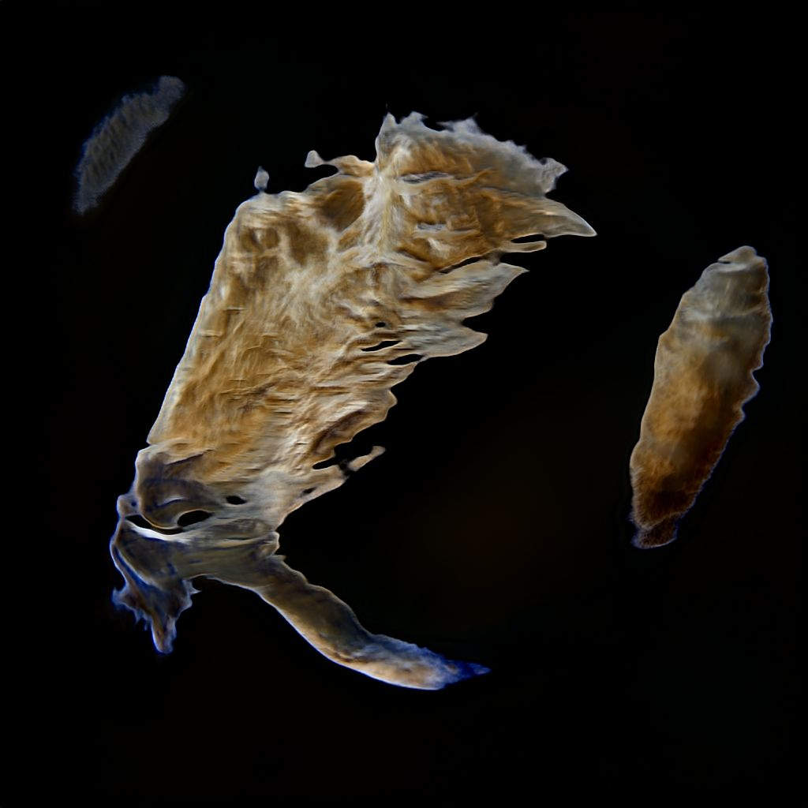

AI Seeds / Aerodynamics of Seeds

Aerodynamics of seeds is an exploration that seeks to disarticulate and weave new imaginaries about the intelligence and evolution of the plant species by applying diverse methods of speculation and radical imagination offered by the field of artificial intelligence.
This project seeks to generate a critical approach to the current and future problems in the behavior of ecosystems and their biodiversity in the face of the current environmental polycrisis, embracing as starting point different possible expressions of plant intelligence.
Artists AI Seed Collective (Mario Guzman, Gabriela Munguía, Erika Torres, Guadalupe Chavez Pardo, Angel Salazar)
Technology GPT-2 with a corpus of poetic nature explorations, philosophical and critical environmental perspectives, StyleGAN2
Seeds in the wind.
The mechanism of the anemochory, the propagation of seeds by wind, is a type of propagule dissemination of great importance for the reproduction of many plant species. It allows a wider territorial dispersal, increasing the chances of preservation of species and their genetic variability.
However, what are the new challenges in terms of cooperation and co-evolution between plant species and the environment? What aerodynamic, morphological and phylogenetic survival strategies will plants and their seeds have to develop in the face of the global climate crisis? How can we rewrite our anthropocentric imaginaries using artificial models?
Plant Intelligence and the Polycrisis.
The project embraces different possible expressions of plant intelligence as a starting point to generate a critical approach to the current and future problems in the behavior of ecosystems and their biodiversity in the face of the current environmental polycrisis.
Through GPT-2 trained on a corpus of poetic nature explorations and philosophical and critical environmental perspectives, alongside visual generation using StyleGAN2, the work constructs speculative scenarios where plant agency, wind, and machine imagination converge.
About the Collective
AIseeds Project is a transdisciplinary artistic collective born at the beginning of 2021 integrated by a group of artists of renowned national and international trajectory from Argentina, Mexico, Ecuador and Colombia based in Buenos Aires.
In our practice we are interested in disarticulating and weaving new perspectives on the notions of intelligence and co-evolution of plants by applying diverse methods of speculative technologies and radical imagination offered by the field of artificial intelligence, digital fabrication techniques and transmedia art.
Credits
- Concept and Direction AI Seed Collective
- Mario Guzman
- Gabriela Munguía
- Erika Torres
- Guadalupe Chavez Pardo
- Angel Salazar